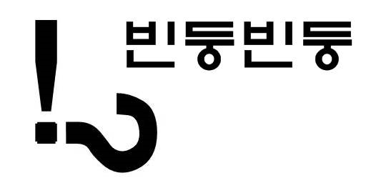

웹소개
Q&A
MBI calculator
MMSE-K calculator
일상생활동작평가도구(MBI)
뇌신경계 질환의 주된 증상인 마비의 정도 및 범위, 불수의 운동의 유무 등에 따른 팔, 다리의 기능저하로 인한 보행 및 일상생활동작(활동)의 수행능력을
평가하는 검사입니다.
이로인해 뇌병변으로 재활치료 과정을 겪게 되면서 대상자의 재활치료 결과를 정확히 알고 그 결과를 객관적으로 평가할 수 있으며, 각 항목의 점수를 총합한 결과는 뇌병변 장애등급 판정의 기준이 됩니다.
MBI(Modified Barthel Index)자동계산 프로그램